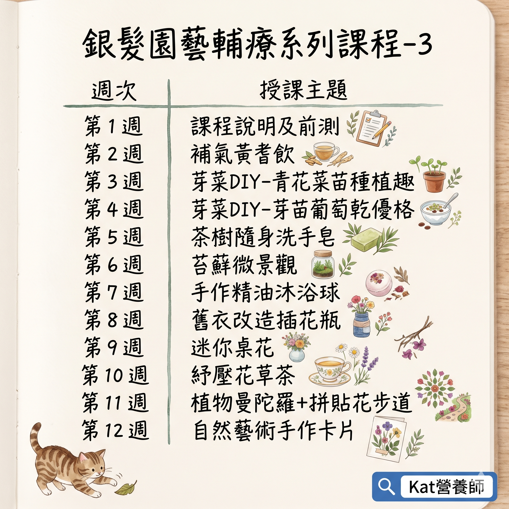

政府與公部門
桃園市衛生局、台中市衛生局、新北市衛生局、桃園市政府智慧城鄉發展委員會、交通部運輸研究所、金管會、法務部、考試院、水利署、資源署、環境部。
Clients
桃園市衛生局、台中市衛生局、新北市衛生局、桃園市政府智慧城鄉發展委員會、交通部運輸研究所、金管會、法務部、考試院、水利署、資源署、環境部。
豐原醫院、弘光科大、林口社大、南崁農會、平鎮農會、中華大健康協會。
wacare 遠距健康、雪晶靈系列產品、優達創意教育、Momo、土地銀行、永豐銀行。
松江靈糧福音中心、平鎮新勢親子館、龜山大華親子館、各社區據點。
Topics
課程分類可點開查看完整題目。
Series

Contact
立即聯繫洽談實體活動，歡迎告知您的需求。